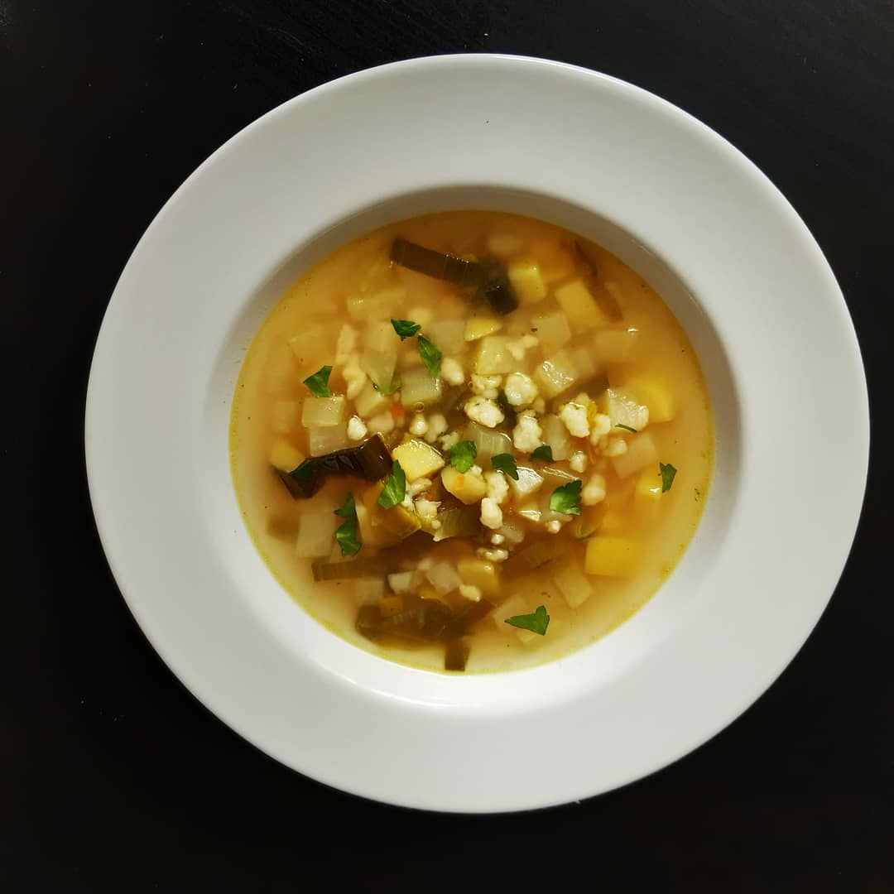

Kalerábová polievka podľa @jajfil — Normy Jedál
Kalerábová polievka s mrvenicou
-----------------------------------------------------------------------------
Ingrediencie
2 ks veľký kaleráb
3 ks zemiak
1 ks cibuľa
3 pl olivový olej
100 g pór
1 čl vegeta
1,5 l zeleninový vývar
Soľ
150 ml detská krupica
1 ks vajce
Petržlenová vňať
Postup
Kaleráb aj zemiaky očistíme a nakrájame na kocky.
Cibuľu nakrájame na drobni av hrnci opražíme do zlatista na oleji. Potom pridáme kaleráb a zemiaky a pór nakrájaný na kolieska. Podusíme asi 10 min. Osolíme a zalejeme vývarom. Pridáme vegetu a soľ. Privedieme do varu a varíme na malom plameni, kým zelenina nezmäkne. Na zahustenie som použila mrvenicu. Zmiešame 1 vajce, hrubú muku a soľ na tvrdé cesto. Nastrúhame na hrubšom strúhadle a zavaríme v polievke.
#soup#kohlarbisoup#kohlrabi#vegetables#pore#vegetarian#vegan#meal#lunch#homecooking#recipe#food#polievka#kalerabovapolievka#kalerab#zelenina#por#vegetarianske#veganske#jedlo#obed#domacvarenie#recept#jedlo#meal#